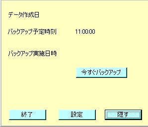

１６ バックアップ
１．インストール
（１）配布されたファイルを展開します。
（２）setup.exeをダブルクリック・実行することで、自動的にインストールされます。
（３）スタートメニューにもバックアッププログラムが配置されます。
ショートカットから、アプリケーションを起動します。
２．アプリケーション
（１）バックアップアプリケーションです。
アプリケーションの機能として、時間を決めての定時バックアップと、即時バックアップの両方を行なうことができます。

（２）設定ボタンから、動作設定を行います。
（３）サーバーアドレスを設定します。
（４）サーバーからデータを取得する際のパスワードを設定します。
（５）定時バックアップ実施時間を設定します。
（６）バックアップファイルの保存先を設定します。
（７）「OK」ボタンを押して、設定を確定します。
（８）アプリケーションに戻ると、バックアップ予定時刻が更新されています。
（９）「今すぐバックアップ」ボタンを押すと、即時バックアップが行なわれます。
ショートカットから、アプリケーションを起動します。
３．バックアップファイル
（１）バックアップを取得すると、所定のフォルダにバックアップファイルが作成されます。
（２）index.htmをブラウザで開くと、バックアップに保存された情報を確認することが出来ます。